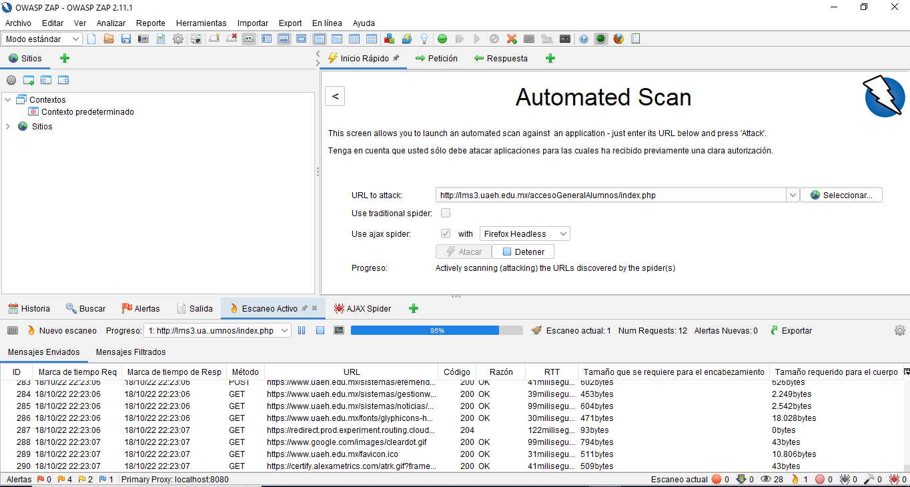

Quick Start runs the spider on the specified URL and then runs the active scanner. A spider crawls through all pages starting from the specified URL. To be more precise, the quick start page is like 'point and shoot'.
Quick Start 2
We enter a url
In case our application makes intensive use of JavaScript, opt for AJAX spider
We click on attack

Let's wait for the scan to finish
As we can see, it shows us the alerts on the page and classifies it according to risk flags.